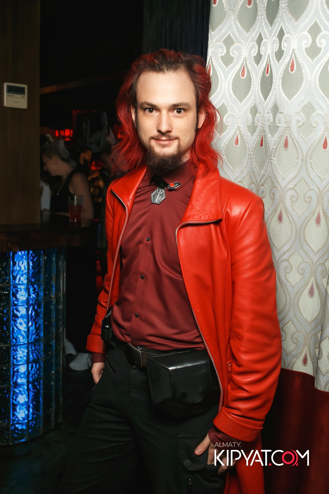

Название работы 1
Год: 2023
Краткое описание концепции. Технологии, материалы и уникальные особенности.
Исскуство о науке.
Год: 2023
Краткое описание концепции. Технологии, материалы и уникальные особенности.
Марк Богданов — медиа-художник и скульптор, работающий в жанре кинетического искусства и интерактивной инсталляции. В своих работах он сочетает новые медиа, цифровые технологии и классические материалы, создавая объектно-пространственные композиции, которые трансформируют восприятие зрителя. Его практика основана на принципах конструктивизма, ретрофутуризма и кибернетики, а ключевыми методами являются 3D-печать, лазерная резка, оптические и кинетические механизмы, проекционные технологии и программируемая электроника. Родился в семье хореографов, вырос между Санкт-Петербургом и Одессой, что сформировало его чувствительность к пластике, композиции и сценографии. Однако вместо традиционного художественного образования он выбрал путь науки, обучаясь оптико-электронике, что повлияло на его художественную стратегию. Его искусство выстраивается на пересечении инженерии, эстетики и интерактивного опыта, стирая границу между технологиями и человеком. В основе его художественного языка — интертекстуальность инженерных решений, где каждое произведение является не просто скульптурой, а исследовательским объектом, вовлекающим зрителя в процесс познания. Художник рассматривает искусство не как инструмент передачи эмоций, а как методологию осмысления реальности, создавая арт-объекты, которые обращаются к логике, анализу и критическому мышлению. Его цель — расширение границ интерактивного искусства через развитие концепции саморефлексирующих объектов. В перспективе он стремится к созданию автономных скульптурных систем, способных не только реагировать на зрителя, но и формировать собственное самосознание в диалоге с окружающей средой.
Я создаю скульптуры, в которых современные технологии производства встречаются с наследием инженерной мысли прошлого. Моё искусство — это поиск формы, структуры и материала, который отражает логику научного прогресса. В своих работах я сочетаю 3D-печать, лазерную резку, цифровую обработку и традиционные ремесленные техники, интегрируя их в единую художественную систему. Мне важно показать, как технологии формируют эстетику и как через них можно создавать новые визуальные смыслы, выходящие за пределы привычного восприятия. Я вдохновляюсь конструктивизмом, ретрофутуризмом и инженерной эстетикой, рассматривая искусство как способ взаимодействия с научным знанием. В моих скульптурах можно увидеть интертекстуальность инженерных решений, где каждая деталь несёт смысл и отсылает к механике, архитектуре и оптике. Меня интересует диалог между прошлым и будущим: как технологии меняются, но принципы остаются вечными. В этом я вижу красоту — в переплетении точности, формы и замысла.